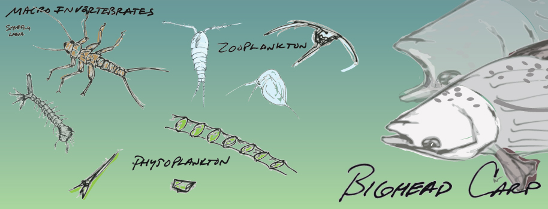
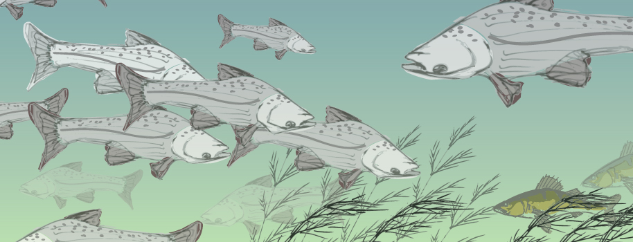
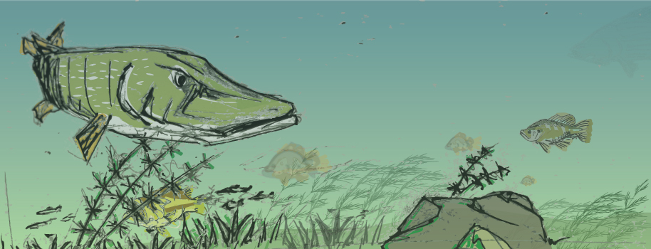
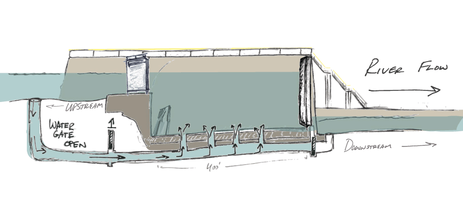
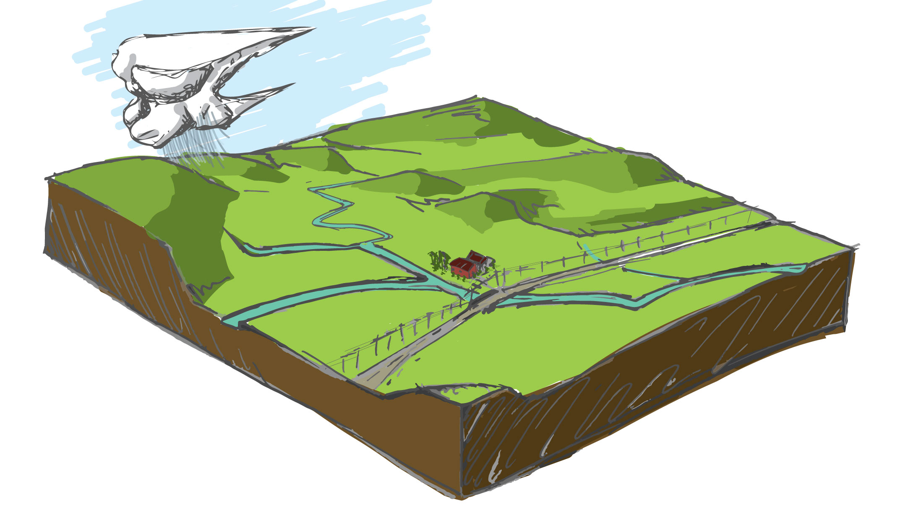
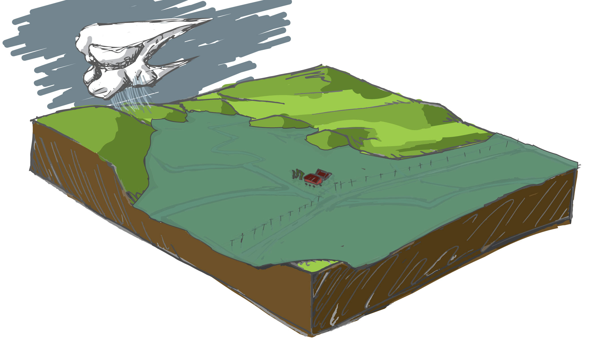
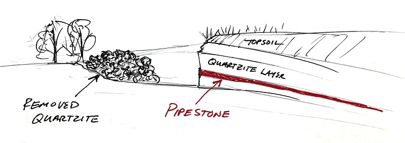
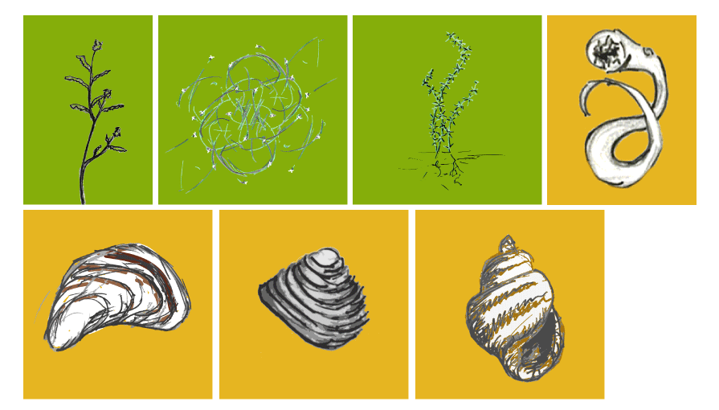
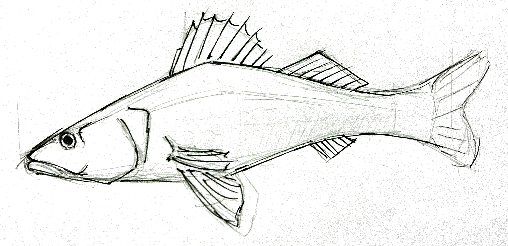
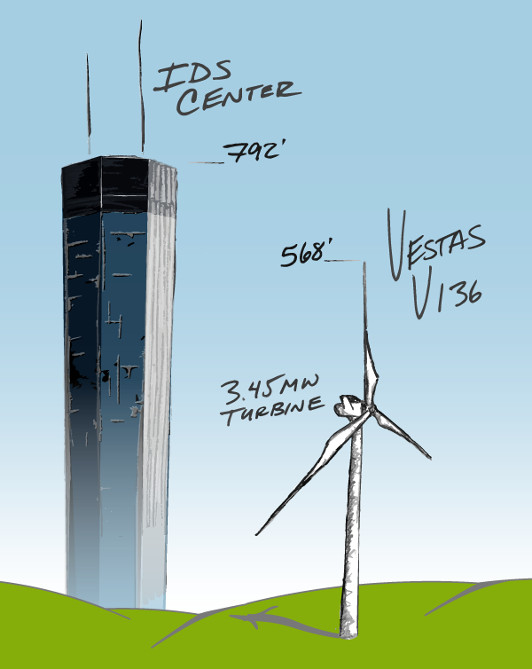

William W. Lager
A selection of illustrations
Innocence Lost: A culture of abuse
Former Children's Theatre students find their voice, recount what happened to them - MPR News


Upper St. Anthony lock closing after half a century; blame the carp - MPR News




Massive rains and flooding - MPR News

Fulfilling a promise in stone: Pipestone National Monument
- MPR News

Icons for invasive plants and animals in Minnesota

Walleye sketch - MPR News
White-tailed deer

Future massive wind turbines in MN face blowback from neighbors - MPR News